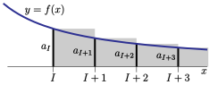

Subsection 3.3.2 The Integral Test
In the integral test, we think of a series \(\sum_{n=1}^\infty a_n\text{,}\) that we cannot evaluate explicitly, as the area of a union of rectangles, with \(a_n\) representing the area of a rectangle of width one and height \(a_n\text{.}\) Then we compare that area with the area represented by an integral, that we can evaluate explicitly, much as we did in Theorem 1.12.17, the comparison test for improper integrals. We'll start with a simple example, to illustrate the idea. Then we'll move on to a formulation of the test in general.
Visualise the terms of the harmonic series \(\sum_{n=1}^\infty\frac{1}{n}\) as a bar graph — each term is a rectangle of height \(\frac{1}{n}\) and width \(1\text{.}\) The limit of the series is then the limiting area of this union of rectangles. Consider the sketch on the left below.

It shows that the area of the shaded columns, \(\sum_{n=1}^4\frac{1}{n}\text{,}\) is bigger than the area under the curve \(y=\frac{1}{x}\) with \(1\le x\le 5\text{.}\) That is
\begin{align*}
\sum_{n=1}^4 \frac{1}{n} & \ge \int_1^5 \frac{1}{x}\dee{x}
\end{align*}
If we were to continue drawing the columns all the way out to infinity, then we would have
\begin{align*}
\sum_{n=1}^\infty \frac{1}{n} & \ge \int_1^\infty \frac{1}{x}\dee{x}
\end{align*}
We are able to compute this improper integral exactly:
\begin{align*}
\int_1^\infty \frac{1}{x} \dee{x} &= \lim_{R \to \infty} \Big[ \log|x| \Big]_1^R = +\infty
\end{align*}
That is the area under the curve diverges to \(+\infty\) and so the area represented by the columns must also diverge to \(+\infty\text{.}\)
It should be clear that the above argument can be quite easily generalised. For example the same argument holds mutatis mutandis 5 Latin for “Once the necessary changes are made”. This phrase still gets used a little, but these days mathematicians tend to write something equivalent in English. Indeed, English is pretty much the lingua franca for mathematical publishing. Quidquid erit. for the series
\begin{gather*}
\sum_{n=1}^\infty \frac{1}{n^2}
\end{gather*}
Indeed we see from the sketch on the right above that
\begin{align*}
\sum_{n=2}^N \frac{1}{n^2} &\le \int_1^N \frac{1}{x^2}\dee{x}
\end{align*}
and hence
\begin{gather*}
\sum_{n=2}^\infty \frac{1}{n^2} \leq \int_1^\infty \frac{1}{x^2}\dee{x}
\end{gather*}
This last improper integral is easy to evaluate:
\begin{align*}
\int_1^\infty \frac{1}{x^2}\dee{x} &= \lim_{R\to\infty} \left[ - \frac{1}{x} \right]_1^R\\
&= \lim_{R\to\infty} \left( \frac{1}{1} - \frac{1}{R} \right) = 1
\end{align*}
Thus we know that
\begin{gather*}
\sum_{n=1}^\infty \frac{1}{n^2} = 1+ \sum_{n=2}^\infty \frac{1}{n^2} \leq 2.
\end{gather*}
and so the series must converge.
The above arguments are formalised in the following theorem.
Theorem 3.3.5 The Integral Test
Let \(N_0\) be any natural number. If \(f(x)\) is a function which is defined and continuous for all \(x\ge N_0\) and which obeys
- \(f(x)\ge 0\) for all \(x\ge N_0\) and
- \(f(x)\) decreases as \(x\) increases and
- \(f(n)=a_n\) for all \(n\ge N_0\text{.}\)
Then
\begin{equation*}
\sum_{n=1}^\infty a_n\text{ converges }\iff \int_{N_0}^\infty f(x)\ \dee{x}\text{ converges}
\end{equation*}
Furthermore, when the series converges, the truncation error
\begin{equation*}
\bigg|\sum_{n=1}^\infty a_n-\sum_{n=1}^N a_n\bigg|\le \int_N^\infty f(x)\ \dee{x}\qquad\text{for all $N\ge N_0$}
\end{equation*}
Proof
Let \(I\) be any fixed integer with \(I \gt N_0\text{.}\) Then
- \(\sum_{n=1}^\infty a_n\) converges if and only if \(\sum_{n=I}^\infty a_n\) converges — removing a fixed finite number of terms from a series cannot impact whether or not it converges.
- Since \(a_n\ge 0\) for all \(n\ge I \gt N_0\text{,}\) the sequence of partial sums \(s_\ell=\sum_{n=I}^\ell a_n\) obeys \(s_{\ell+1} = s_\ell+a_{n+1} \ge s_\ell\text{.}\) That is, \(s_\ell\) increases as \(\ell\) increases.
- So \(\big\{s_\ell\big\}\) must either converge to some finite number or increase to infinity. That is, either \(\sum_{n=I}^\infty a_n\) converges to a finite number or it is \(+\infty\text{.}\)

Look at the figure above. The shaded area in the figure is \(\sum_{n=I}^\infty a_n\) because
- the first shaded rectangle has height \(a_I\) and width \(1\text{,}\) and hence area \(a_I\) and
- the second shaded rectangle has height \(a_{I+1}\) and width \(1\text{,}\) and hence area \(a_{I+1}\text{,}\) and so on
This shaded area is smaller than the area under the curve \(y=f(x)\) for \(I-1\le x \lt \infty\text{.}\) So
\begin{equation*}
\sum_{n=I}^\infty a_n \le \int_{I-1}^\infty f(x)\ \dee{x}
\end{equation*}
and, if the integral is finite, the sum \(\sum_{n=I}^\infty a_n\) is finite too. Furthermore, the desired bound on the truncation error is just the special case of this inequality with \(I=N+1\text{:}\)
\begin{gather*}
\sum_{n=1}^\infty a_n - \sum_{n=1}^N a_n =\sum_{n=N+1}^\infty a_n \le \int_N^\infty f(x)\ \dee{x}
\end{gather*}

For the “divergence case” look at the figure above. The (new) shaded area in the figure is again \(\sum_{n=I}^\infty a_n\) because
- the first shaded rectangle has height \(a_I\) and width \(1\text{,}\) and hence area \(a_I\) and
- the second shaded rectangle has height \(a_{I+1}\) and width \(1\text{,}\) and hence area \(a_{I+1}\text{,}\) and so on
This time the shaded area is larger than the area under the curve \(y=f(x)\) for \(I\le x \lt \infty\text{.}\) So
\begin{equation*}
\sum_{n=I}^\infty a_n \ge \int_I^\infty f(x)\ \dee{x}
\end{equation*}
and, if the integral is infinite, the sum \(\sum_{n=I}^\infty a_n\) is infinite too.
Now that we have the integral test, it is straightforward to determine for which values of \(p\) the series 6 This series, viewed as a function of \(p\text{,}\) is called the Riemann zeta function, \(\zeta(p)\text{,}\) or the Euler-Riemann zeta function. It is extremely important because of its connections to prime numbers (among many other things). Indeed Euler proved that \(\zeta(p) = \sum_{n=1}^\infty \frac{1}{n^p} = \prod_{\text{P prime}} \left(1 - {\rm P}^{-p} \right)^{-1} \text{.}\) Riemann showed the connections between the zeros of this function (over complex numbers \(p\)) and the distribution of prime numbers. Arguably the most famous unsolved problem in mathematics, the Riemann hypothesis, concerns the locations of zeros of this function.
\begin{gather*}
\sum_{n=1}^\infty \frac{1}{n^p}
\end{gather*}
converges.
Example 3.3.6 The \(p\) test: \(\sum\limits_{n=1}^\infty\frac{1}{n^p}\)
Let \(p \gt 0\text{.}\) We'll now use the integral test to determine whether or not the series \(\sum_{n=1}^\infty\frac{1}{n^p}\) (which is sometimes called the \(p\)-series) converges.
- To do so, we need a function \(f(x)\) that obeys \(f(n)=a_n=\frac{1}{n^p}\) for all \(n\) bigger than some \(N_0\text{.}\) Certainly \(f(x)=\frac{1}{x^p}\) obeys \(f(n)=\frac{1}{n^p}\) for all \(n\ge 1\text{.}\) So let's pick this \(f\) and try \(N_0=1\text{.}\) (We can always increase \(N_0\) later if we need to.)
-
This function also obeys the other two conditions of Theorem 3.3.5:
- \(f(x) \gt 0\) for all \(x\ge N_0=1\) and
- \(f(x)\) decreases as \(x\) increases because \(f'(x)=-p\frac{1}{x^{p+1}} \lt 0\) for all \(x\ge N_0=1\text{.}\)
- So the integral test tells us that the series \(\sum_{n=1}^\infty\frac{1}{n^p}\) converges if and only if the integral \(\int_1^\infty\frac{\dee{x}}{x^p}\) converges.
- We have already seen, in Example 1.12.8, that the integral \(\int_1^\infty\frac{\dee{x}}{x^p}\) converges if and only if \(p \gt 1\text{.}\)
So we conclude that \(\sum_{n=1}^\infty\frac{1}{n^p}\) converges if and only if \(p \gt 1\text{.}\) This is sometimes called the \(p\)-test.
- In particular, the series \(\sum_{n=1}^\infty\frac{1}{n}\text{,}\) which is called the harmonic series, has \(p=1\) and so diverges. As we add more and more terms of this series together, the terms we add, namely \(\frac{1}{n}\text{,}\) get smaller and smaller and tend to zero, but they tend to zero so slowly that the full sum is still infinite.
- On the other hand, the series \(\sum_{n=1}^\infty\frac{1}{n^{1.000001}}\) has \(p = 1.000001 \gt 1\) and so converges. This time as we add more and more terms of this series together, the terms we add, namely \(\frac{1}{n^{1.000001}}\text{,}\) tend to zero (just) fast enough that the full sum is finite. Mind you, for this example, the convergence takes place very slowly — you have to take a huge number of terms to get a decent approximation to the full sum. If we approximate \(\sum_{n=1}^\infty\frac{1}{n^{1.000001}}\) by the truncated series \(\sum_{n=1}^N\frac{1}{n^{1.000001}}\text{,}\) we make an error of at most\begin{align*} \int_N^\infty \frac{\dee{x}}{x^{1.000001}} & = \lim_{R\rightarrow\infty} \int_N^R \frac{\dee{x}}{x^{1.000001}}\\ & = \lim_{R\rightarrow\infty}- \frac{1}{0.000001} \Big[\frac{1}{R^{0.000001}}-\frac{1}{N^{0.000001}}\Big]\\ & =\frac{10^6}{N^{0.000001}} \end{align*}This does tend to zero as \(N\rightarrow\infty\text{,}\) but really slowly.
We now know that the dividing line between convergence and divergence of \(\sum_{n=1}^\infty\frac{1}{n^p}\) occurs at \(p=1\text{.}\) We can dig a little deeper and ask ourselves how much more quickly than \(\frac{1}{n}\) the \(n^{\rm th}\) term needs to shrink in order for the series to converge. We know that for large \(x\text{,}\) the function \(\log x\) is smaller than \(x^a\) for any positive \(a\) — you can convince yourself of this with a quick application of L'Hôpital's rule. So it is not unreasonable to ask whether the series
\begin{gather*}
\sum_{n=2}^\infty \frac{1}{n \log n}
\end{gather*}
converges. Notice that we sum from \(n=2\) because when \(n=1, n\log n=0\text{.}\) And we don't need to stop there 7 We could go even further and see what happens if we include powers of \(\log(\log(n))\) and other more exotic slow growing functions.. We can analyse the convergence of this sum with any power of \(\log n\text{.}\)
Example 3.3.7 \(\sum\limits_{n=2}^\infty\frac{1}{n(\log n)^p}\)
Let \(p \gt 0\text{.}\) We'll now use the integral test to determine whether or not the series \(\sum\limits_{n=2}^\infty\frac{1}{n(\log n)^p}\) converges.
- As in the last example, we start by choosing a function that obeys \(f(n)=a_n=\frac{1}{n(\log n)^p}\) for all \(n\) bigger than some \(N_0\text{.}\) Certainly \(f(x)=\frac{1}{x(\log x)^p}\) obeys \(f(n)=\frac{1}{n(\log n)^p}\) for all \(n\ge 2\text{.}\) So let's use that \(f\) and try \(N_0=2\text{.}\)
-
Now let's check the other two conditions of Theorem 3.3.5:
- Both \(x\) and \(\log x\) are positive for all \(x \gt 1\text{,}\) so \(f(x) \gt 0\) for all \(x\ge N_0=2\text{.}\)
- As \(x\) increases both \(x\) and \(\log x\) increase and so \(x(\log x)^p\) increases and \(f(x)\) decreases.
- So the integral test tells us that the series \(\sum\limits_{n=2}^\infty\frac{1}{n(\log n)^p}\) converges if and only if the integral \(\int_2^\infty\frac{\dee{x}}{x (\log x)^p}\) converges.
- To test the convergence of the integral, we make the substitution \(u=\log x\text{,}\) \(\dee{u}=\frac{\dee{x}}{x}\text{.}\)\begin{gather*} \int_2^R \frac{\dee{x}}{x (\log x)^p} =\int_{\log 2}^{\log R}\frac{\dee{u}}{u^p} \end{gather*}We already know that the integral \(\int_1^\infty\frac{\dee{u}}{u^p}\text{,}\) and hence the integral \(\int_2^R \frac{\dee{x}}{x (\log x)^p}\text{,}\) converges if and only if \(p \gt 1\text{.}\)
So we conclude that \(\sum\limits_{n=2}^\infty\frac{1}{n(\log n)^p}\) converges if and only if \(p \gt 1\text{.}\)